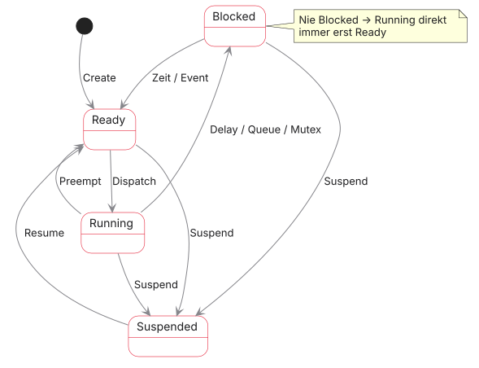
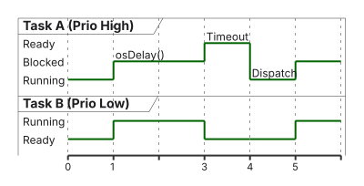
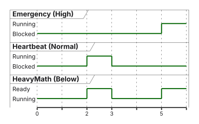

03 · Einführung in Echtzeitbetriebssysteme
FreeRTOS und Task-Management · EZS · DHBW Stuttgart
Prof. Dr.-Ing. Daniel Klünder
Willkommen in der Profiliga!
- Herzlich willkommen zum 3. Termin unserer Vorlesung
- Letzte Woche: Die Mathematik (RMS, EDF) und unser eigener kleiner Scheduler
- Heute: Wir werfen unseren Eigenbau weg und wechseln in die Industrie-Praxis
- Wir führen FreeRTOS ein — das am weitesten verbreitete RTOS für Mikrocontroller
- Ziel: Verstehen, wie das OS unter der Haube Speicher und CPU verwaltet
Agenda für heute
- Recap: Warum unser Eigenbau-Scheduler letzte Woche gescheitert ist
- Vom Bare-Metal zum RTOS (Latenz vs. Determinismus)
- Die Architektur von FreeRTOS
- Task-Management: TCB und Speicherbedarf
- Die State-Machine (Ready, Running, Blocked, Suspended)
- Tick-Rate, Delays und Context Switch
- CMSIS-RTOS v2 API und Labor am STM32H755
Recap: Unser Round-Robin Eigenbau
- Letzte Woche: Array aus Funktionszeigern (TCBs)
- Scheduler lief ringförmig durch alle Tasks (Round-Robin)
- Kontextwechsel als einfacher C-Aufruf:
task_list[idx].task_func(); - Voraussetzung: System war kooperativ
Recap: Der Crash im Labor
- In der Labor-Aufgabe haben wir die Kooperation sabotiert
- Task 2: gigantische, blockierende Zählschleife ohne
os_yield() - Ergebnis:
- Task 1 (LED) ist eingefroren
- Der Scheduler wurde nie wieder aufgerufen
- Das System war tot (Starvation)
- Fazit: Für harte Echtzeit dürfen wir der Anwendungssoftware niemals vertrauen — wir brauchen Präemption
Die Notwendigkeit eines echten RTOS
- Ein modernes System (z. B. Dual-Core STM32H755) hat komplexe Anforderungen:
- Harte Timing-Garantien (Präemption)
- Sichere Kommunikation zwischen Tasks (Queues)
- Absicherung gemeinsamer Ressourcen (Mutexes)
- Speichermanagement
- Das baut man nicht an einem Nachmittag
- Wir greifen auf bewährte, zertifizierbare Software zurück
Was leistet ein RTOS?
- Multitasking (Scheduling): Orchestrierung nach strengen Regeln (z. B. Fixed Priority / RMS)
- Inter-Task Communication: Queues und Mailboxes
- Synchronisation: Mutexes und Semaphore für Interrupt-Sicherheit
- Memory Management: RAM-Stacks für jede Task
- Port-Layer: ARM-Spezifika (SysTick, PendSV) — generischer C-Code darüber (nicht mit dem STM32-HAL verwechseln)
Der Markt für Echtzeitbetriebssysteme
Kommerziell (oft Safety-zertifiziert):
- VxWorks: Luft- und Raumfahrt (Mars Rover)
- QNX: Auto-Infotainment
- AUTOSAR OS: Steuergeräte (meist OSEK-basiert)
Open Source / industrie-nah:
- Zephyr: Linux Foundation (z. B. Nordic)
- FreeRTOS: Marktführer bei kleineren Mikrocontrollern
Lernziele des heutigen Tages
- Trade-off Latenz vs. Determinismus verstehen
- Task-Modell von FreeRTOS implementieren können
- Verstehen, warum eine Task im Zustand Blocked exakt \(0\%\) CPU benötigt
- RAM-Bedarf eines Task-Sets und Tick-Auflösung berechnen
- CMSIS-RTOS v2 statt nativer FreeRTOS-API nutzen
- FreeRTOS in der STM32CubeIDE konfigurieren und Präemption im Labor prüfen
Architektur: Bare-Metal vs. RTOS
Bare-Metal (Super-Loop)
- Hardware → Ihr C-Code
- Sehr flache Architektur
- Ein einziger Call-Stack im RAM
- CPU rechnet oft dauerhaft (Polling, \(\approx 100\%\) Auslastung)
RTOS-Architektur
- Hardware → RTOS → Ihre Tasks
- OS als Zwischenschicht
- Jede Task hat einen eigenen Call-Stack
- CPU kann schlafen (Idle-Task), wenn nichts zu tun ist
Das Kernparadigma: Latenz vs. Determinismus
- Vorurteil: „Wir können kein RTOS nutzen, das ist zu langsam!“
- Fakt: Ein RTOS kostet Rechenzeit (Overhead)
- SysTick-Interrupt typisch alle \(1\,\mathrm{ms}\)
- Scheduler muss Listen sortieren (Taktzyklen)
- Context Switch (PendSV) kostet ca. \(100\)–\(300\) Takte
- Aber: Wir tauschen maximale Geschwindigkeit gegen garantierte Pünktlichkeit (Determinismus)
Visualisierung: Jitter-Vergleich
- Hardware-Event triggert eine Reaktion
- Bare-Metal (Super-Loop ohne IRQ): oft schneller, aber unregelmäßig (hoher Jitter)
- RTOS: etwas später (OS-Overhead), bei hoher Priorität nahezu konstant (Jitter \(\approx 0\))
Einführung in FreeRTOS
- Ursprünglich von Richard Barry (2003) entwickelt
- Open Source (MIT-Lizenz — auch in kommerziellen, geschlossenen Produkten nutzbar)
- 2017 von Amazon (AWS) übernommen
- Eigenschaften:
- Winziger Footprint (Scheduler ab \(\approx 4\,\mathrm{KB}\) ROM, \(< 1\,\mathrm{KB}\) RAM)
- Sehr portabel (8-Bit AVR bis 32-Bit ARM Cortex-A)
- Quasi-Standard in Maker- und Industrie-Welt (ESP32, STM32)
Die FreeRTOS Architektur
- Das gesamte Betriebssystem besteht aus nur wenigen C-Dateien
- Kern-Dateien (OS-Logik, chip-unabhängig):
tasks.c: Scheduler, TCB-Verwaltung, Ready-Listenlist.c: Optimierte doppelt verkettete Listenqueue.c: Inter-Task-Kommunikation
- Port-Layer (hardware-spezifisch):
port.c/portmacro.h: Assembler für SysTick und PendSV (Cortex-M4)
Zusammenfassung: Warum ein RTOS?
Vorteile:
- Vorhersagbares Verhalten (Determinismus) durch hardwarenahe Präemption
- Saubere Software-Struktur (unabhängige Tasks statt Spaghetticode)
- Fertige, getestete Module für Kommunikation und Speicherschutz
Nachteile:
- Verlust absoluter CPU-Rohleistung (Scheduler-Overhead)
- Höherer RAM-Verbrauch (eigener Stack pro Task)
- Komplexere Fehlersuche (Race Conditions)
Das FreeRTOS Task-Modell
- Eine Task in FreeRTOS ist eine C-Funktion
- Wichtigste Regel: Die Funktion darf niemals ans Ende gelangen (
returnist verboten) - Als unendliche Schleife
for(;;)oderwhile(1)schreiben
Der Task Control Block (TCB) in FreeRTOS
- FreeRTOS legt für jede Task ein Struct im RAM an
- Wichtige Felder in
tskTCB:pxTopOfStack: Wo liegen die CPU-Register dieser Task?xStateListItem: Knoten für Ready/Blocked-ListenuxPriority: Aktuelle PrioritätpcTaskName: String für Debugging (z. B."MotorTask")
- Der TCB wird vom OS verwaltet — wir fassen ihn niemals direkt an
Speichermanagement: Der Stack
- In Bare-Metal: ein globaler Stack für das ganze Programm
- In FreeRTOS: jede Task hat einen eigenen, isolierten Stack im RAM
- Lokale Variablen und Funktionsaufrufe nutzen nur diesen privaten Stack
- Vorsicht: Stack zu klein → Stack Overflow in den RAM anderer Tasks
Berechnung des RAM-Bedarfs
- RAM ist auf Mikrocontrollern kostbar (STM32H755: \(1\,\mathrm{MB}\); kleinere Cortex-M oft nur \(16\,\mathrm{KB}\))
- RAM-Kosten einer neuen Task: \[\mathrm{RAM} = \text{TCB}~(\approx 80\,\mathrm{Byte}) + (\text{Stack-Wörter} \times 4\,\mathrm{Byte})\]
- Beispiel: Stack von \(128\) Wörtern auf 32-Bit-ARM \(= 512\,\mathrm{Byte}\)
- Gesamt: \(\approx 512 + 80 = 592\,\mathrm{Byte}\) pro Task
- Lektion: Keine großen Arrays als lokale Variablen — Heap oder globale Variablen nutzen
Speicherallokation: Statisch vs. Dynamisch
Dynamisch (xTaskCreate):
- OS ruft intern
pvPortMalloc()(RTOS-Heap) - Problem: Kann fehlschlagen, wenn der Heap voll ist (Laufzeitfehler)
Statisch (xTaskCreateStatic):
- Globale C-Arrays für den Stack übergeben
- Vorteil: RAM-Mangel fällt schon beim Kompilieren auf (Automotive-Standard)
Das FreeRTOS Zustandsmodell
- Das Verständnis dieses Modells entscheidet, ob Ihr System echtzeitfähig ist
- Eine Task befindet sich immer in exakt einem von vier Zuständen

Der „Running“-Zustand
- Die Task besitzt die Kontrolle über die CPU-Hardware (Register, ALU)
- Auf einem Single-Core kann immer nur genau eine Task Running sein
- Auf dem STM32H755 (Dual-Core):
- Ein Kernel auf Cortex-M7 (eine Task Running)
- Ein Kernel auf Cortex-M4 (eine Task Running)
- Die Task bleibt Running, bis sie:
- etwas Blockierendes aufruft (Delay, Mutex)
- von einer wichtigeren Task unterbrochen wird (Präemption)
Der „Ready“-Zustand
- Warteschlange der arbeitswilligen Tasks
- Logisch und rechnerisch bereit, alle nötigen Daten vorhanden
- Warum läuft sie nicht?
- Eine Task mit gleicher oder höherer Priorität blockiert aktuell Running
- FreeRTOS verwaltet pro Prioritäts-Level eine eigene Ready-Liste
Der „Blocked“-Zustand (Die Magie des RTOS)
- Wichtigster Zustand für ein stabiles Echtzeitsystem
- Task wartet auf ein Ereignis:
- Zeitlich:
vTaskDelay(100)(schlafe exakt 100 Ticks) - Logisch: Taste, UART-Daten, Queue
- Zeitlich:
- Clou: Blocked-Task wird vom Scheduler beim Suchen komplett ignoriert
- Verbrauch: \(0{,}00\%\) CPU-Rechenzeit
- Deshalb niemals
HAL_Delay()in einem RTOS (Busy-Wait aufuwTick: Task bleibt Running)
Visualisierung: Task-Zustände im Zeitverlauf

- Task A schickt sich selbst in den Blocked-Zustand
- Task B darf endlich rechnen
- Timeout: A wird Ready (nie direkt Running), dann Dispatch — A verdrängt B
FreeRTOS Scheduler-Konfiguration
- Scheduler-Verhalten tiefgreifend anpassbar
- Steuerung über
FreeRTOSConfig.h - Präemption aktivieren:
configUSE_PREEMPTION = 1: Scheduler darf Tasks unterbrechen (präemptiv / Fixed Priority)configUSE_PREEMPTION = 0: kooperatives Scheduling (wie unser Eigenbau)
- Für unsere Vorlesung: diesen Wert immer auf \(1\) setzen
Prioritäten in FreeRTOS (Achtung: Falle!)
- Jede Task bekommt beim Start eine Priorität als Integer (
uint8_t) - FreeRTOS-Regel:
- Prio \(0\) = niedrigste Priorität
- Prio
configMAX_PRIORITIES - 1= höchste Priorität
- Falle für Hardware-Entwickler:
- ARM Cortex-M NVIC denkt genau andersherum (\(0\) = höchste Prio)
- Merken: OS-Level (hohe Zahl = wichtig), Hardware-Level (kleine Zahl = wichtig)
Die Idle-Task (Prio 0)
- Was passiert, wenn alle eigenen Tasks Blocked sind?
- Die CPU muss Assembler ausführen — sie kann nicht „nichts“ tun
- FreeRTOS erstellt beim Start automatisch die Idle-Task
- Immer Priorität \(0\) (lässt jeden anderen ran)
- Nutzen der Idle-Task:
- Speicher gelöschter Tasks aufräumen
- CPU in Hardware-Tiefschlaf (
WFI— Wait For Interrupt), starker Stromspar-Effekt (configUSE_TICKLESS_IDLE)
Strom sparen: Tickless Idle
- Was passiert, wenn alle Tasks für z. B. \(500\,\mathrm{ms}\) blockiert sind?
- Normalerweise wacht der SysTick trotzdem jede \(1\,\mathrm{ms}\) auf, prüft Listen und schläft wieder
- Problem: Die CPU wird 500-mal sinnlos geweckt (Stromverschwendung)
- Lösung:
configUSE_TICKLESS_IDLE = 1- FreeRTOS berechnet die Zeit bis zum nächsten Event (z. B. \(500\,\mathrm{ms}\))
- SysTick aus, Low-Power-Timer auf diese Dauer programmieren
- CPU geht in echten Deep-Sleep
Der RTOS-Herzschlag: Die Tick-Rate
- Das Zeitgefühl von FreeRTOS basiert auf Ticks
- Ein Tick entspricht einem Interrupt des SysTick-Timers
- Gesteuert durch
configTICK_RATE_HZ(meist \(1000\,\mathrm{Hz}\)) - Bedeutung:
- Bei \(1000\,\mathrm{Hz}\) dauert 1 Tick exakt \(1\,\mathrm{ms}\)
- Das OS löst Zeiten nur in ganzzahligen Vielfachen von Ticks auf
- Ein Delay von \(1{,}5\,\mathrm{ms}\) ist nicht möglich (wird gerundet)
Zeit-Umrechnung (Die goldene Regel)
- Zeiten niemals als nackte Integer angeben
vTaskDelay(100)bedeutet: schlafe 100 Ticks- Ändert ein Kollege die Tick-Rate auf \(100\,\mathrm{Hz}\)?
- Aus \(100\,\mathrm{ms}\) wird plötzlich \(1\,\mathrm{s}\)
Der Context Switch (Overhead-Analyse)
- Der Wechsel erfolgt via PendSV-Assembler-Code
- Was kostet das die CPU?
- Hardware rettet 8 Kern-Register (\(\approx 12\) Takte)
- PendSV-Handler rettet restliche Register (Push)
- Scheduler-Logik (Listen umhängen)
- Neue Register laden (Pop)
- Summe: ca. \(150\)–\(300\) Taktzyklen (je nach Optimierung)
- Bei \(100\,\mathrm{MHz}\) CPU-Takt: nur \(\approx 2\)–\(3\,\text{µs}\)
Wann wechselt der Scheduler?
- Der Context Switch passiert nicht nur beim 1-ms-SysTick
- Das OS wechselt sofort asynchron, wenn:
- eine laufende Task
vTaskDelay()aufruft (freiwillig abgeben) - ein Hardware-Interrupt (z. B. UART RX) Daten in eine Queue legt und dadurch eine blockierte Task mit höherer Prio aufweckt
- eine laufende Task
- Genau das sorgt für minimale Latenzen in harten Echtzeitsystemen
vTaskDelay vs. HAL_Delay
- Das wichtigste Konzept für das Labor
| Metrik | HAL_Delay(100) |
vTaskDelay(...) |
|---|---|---|
| CPU-Zustand | Busy-Wait auf uwTick |
Wechsel zu anderer Task / Idle |
| Task-Zustand | Bleibt Running | Wechselt nach Blocked |
| Auslastung \(U\) | \(100\%\) CPU-Last | \(0\%\) CPU-Last |
| Fazit | Zerstört Echtzeit | Echtes OS-Scheduling |
Drift-freies Timing: vTaskDelayUntil
vTaskDelayblockiert relativ zur aktuellen Zeit- Problem: Ausführungszeit verschiebt den nächsten Start (Drift)
- Lösung:
vTaskDelayUntil()merkt sich den absoluten Startzeitpunkt - Wichtig für präzise PID-Regler
Die Datei FreeRTOSConfig.h
- Jeder Port von FreeRTOS benötigt diese Konfigurationsdatei
- Definiert das Verhalten des OS zur Kompilierzeit
- Wichtige Makros:
configUSE_PREEMPTION(\(1\) = an, \(0\) = aus)configMAX_PRIORITIES(Anzahl der Listen, oft 7)configMINIMAL_STACK_SIZE(Mindest-RAM für die Idle-Task)configTOTAL_HEAP_SIZE(RAM-Pool für dynamische Allokation)
Zusammenfassung: Scheduler und Timing
- FreeRTOS ist primär präemptiv (SysTick, PendSV)
- Die Tick-Rate bestimmt die feinste zeitliche Auflösung (meist \(1\,\mathrm{ms}\))
- Blocked-Tasks entlasten die CPU massiv
- Konfiguration statisch über C-Makros
- Prioritäten: hohe Zahl = hohe Prio (Achtung Cortex-M NVIC)
FreeRTOS API vs. CMSIS-RTOS v2
- Native FreeRTOS-API ist historisch gewachsen (z. B.
xTaskCreate) - Problem: Vendor Lock-in — Wechsel zu Zephyr oder ThreadX wird teuer
- Lösung: CMSIS-RTOS v2 (ARM)
- Standardisierte Abstraktionsschicht (Wrapper)
- Einheitliche C-Funktionen (z. B.
osThreadNew) - Darunter kann ein beliebiges RTOS liegen
STMicroelectronics und CMSIS
- Die STM32CubeIDE generiert standardmäßig CMSIS-RTOS v2
- FreeRTOS dient uns als Backend
| Aktion | FreeRTOS nativ | CMSIS-RTOS v2 |
|---|---|---|
| Task erstellen | xTaskCreate() |
osThreadNew() |
| Task blockieren | vTaskDelay() |
osDelay() |
| Queue anlegen | xQueueCreate() |
osMessageQueueNew() |
| Zeit holen | xTaskGetTickCount() |
osKernelGetTickCount() |
Ein CMSIS-Thread im Code
- Thread-Attribute: Name, Stack-Größe, Prio
- Danach Anmeldung beim OS
- Falle: CMSIS erwartet Stack-Größe in Bytes, nicht in Wörtern
Starten des Betriebssystems
- Nach Hardware-Init und Task-Anlage: Kontrolle abgeben
- Was passiert?
- SysTick wird auf \(1\,\mathrm{ms}\) programmiert
- Scheduler durchsucht die Ready-Liste
- Stack-Pointer springt in die Task mit höchster Prio
- Wichtigste Regel: Code nach
osKernelStart()wird niemals ausgeführt
Fehlerbehandlung: Wenn RAM fehlt
- Erschöpfter Heap:
osThreadNewliefertNULL - Immer prüfen, sonst Hard Fault zur Laufzeit
- Labor-Tipp: Task startet nicht?
configTOTAL_HEAP_SIZEin CubeMX erhöhen
Schritt 1: STM32CubeIDE-Setup
- Ziel: FreeRTOS auf dem Cortex-M4, präemptives Prioritäts-Scheduling live beweisen (Prioritäten nach Kritikalität — das ist nicht Rate Monotonic, dafür bräuchten wir Perioden \(\rightarrow\) Prioritäten)
- Neues Projekt STM32H755 (Cortex-M4 aktivieren)
- Middleware: FREERTOS, Interface CMSIS_V2
TOTAL_HEAP_SIZEmindestens \(16384\) Bytes (\(16\,\mathrm{KB}\))
Schritt 2: Der Konflikt der Timer
- Problem:
- HAL nutzt SysTick für
HAL_Delay() - FreeRTOS braucht SysTick zwingend für den Scheduler
- Beide auf demselben Timer: Absturz zur Laufzeit
- HAL nutzt SysTick für
- Lösung (CubeMX-Warnung!):
- System Core \(\rightarrow\) SYS \(\rightarrow\) Timebase Source
- Von SysTick auf TIM6 umstellen
- HAL nutzt TIM6; SysTick gehört FreeRTOS exklusiv
Schritt 3: Task-Design für das Labor
- Drei Tasks, um Fixed-Priority-Präemption zu beweisen:
- Heartbeat (
osPriorityNormal): LED alle \(500\,\mathrm{ms}\) viaosDelay - HeavyMath (
osPriorityBelowNormal): Endlosschleife ohne Delay, \(100\%\) CPU - Emergency (
osPriorityHigh): wartet auf Tastendruck (später per Queue)
- Heartbeat (
Code-Struktur nach Generierung
- CubeIDE platziert CMSIS-Aufrufe (
osThreadNew) inmain.c - Unten: leere Skelette für die Task-Funktionen
Code-Skelett: Die HeavyMath-Task
- Diese Task bricht die Blockade-Regel absichtlich
Beobachtung 1: Der Präemptions-Beweis
- Code auf den STM32H755 flashen
- Was passiert?
- Heartbeat-LED blinkt stabil im \(500\,\mathrm{ms}\)-Takt
- Warum friert das System nicht ein?
- Heartbeat: Normal; HeavyMath: BelowNormal
- Nach \(500\,\mathrm{ms}\) weckt SysTick Heartbeat
- Höhere Prio: OS reißt HeavyMath die CPU weg (Präemption)
Visuelle Erklärung: Präemption im Labor

- CPU dauerhaft bei \(100\%\), Auslastung aber nach Prioritäten (Fixed Priority) aufgeteilt
Beobachtung 2: Starvation durch falsche Prioritäten
- Absichtlicher Fehler zum Verständnis von Prioritäts-Scheduling:
- HeavyMath-Prio \(\rightarrow\)
osPriorityHigh(höher als Heartbeat)
- HeavyMath-Prio \(\rightarrow\)
- Flashen und beobachten:
- LED bleibt dunkel / blinkt nie wieder
- Heartbeat verhungert in der Ready-Liste (Starvation)
- Hochpriore Endlosschleife gibt die CPU nicht frei
Debugging: Stack Overflow erkennen
- Board tut nichts (keine LED, kein sichtbarer Code)?
- Oft: Stack der Task zu klein (Stack Overflow)
- Hardware-Tipp:
- Cortex-M4 löst HardFault aus
- Debugger pausieren: Ausführung steckt in
HardFault_Handler()
- Lösung: In CubeMX Stack Size der betroffenen Task verdoppeln
Zusammenfassung des Tages
- RTOS: maximale Geschwindigkeit (Latenz) gegen Garantie (Determinismus)
- Jede Task braucht RAM-Budget (TCB + eigener Stack)
- Blockierte Task: \(0\%\) Rechenzeit — niemals reine C-Delays
- CMSIS-RTOS v2 schützt vor Vendor Lock-in
- Timer-Interrupts und Prioritäten verhindern das Einfrieren wichtiger Teile